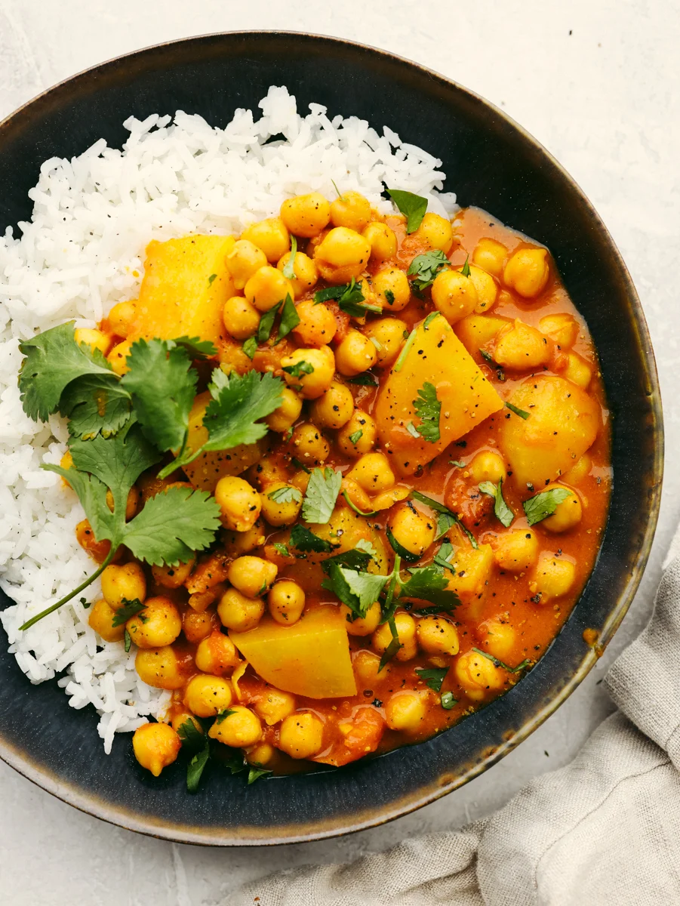
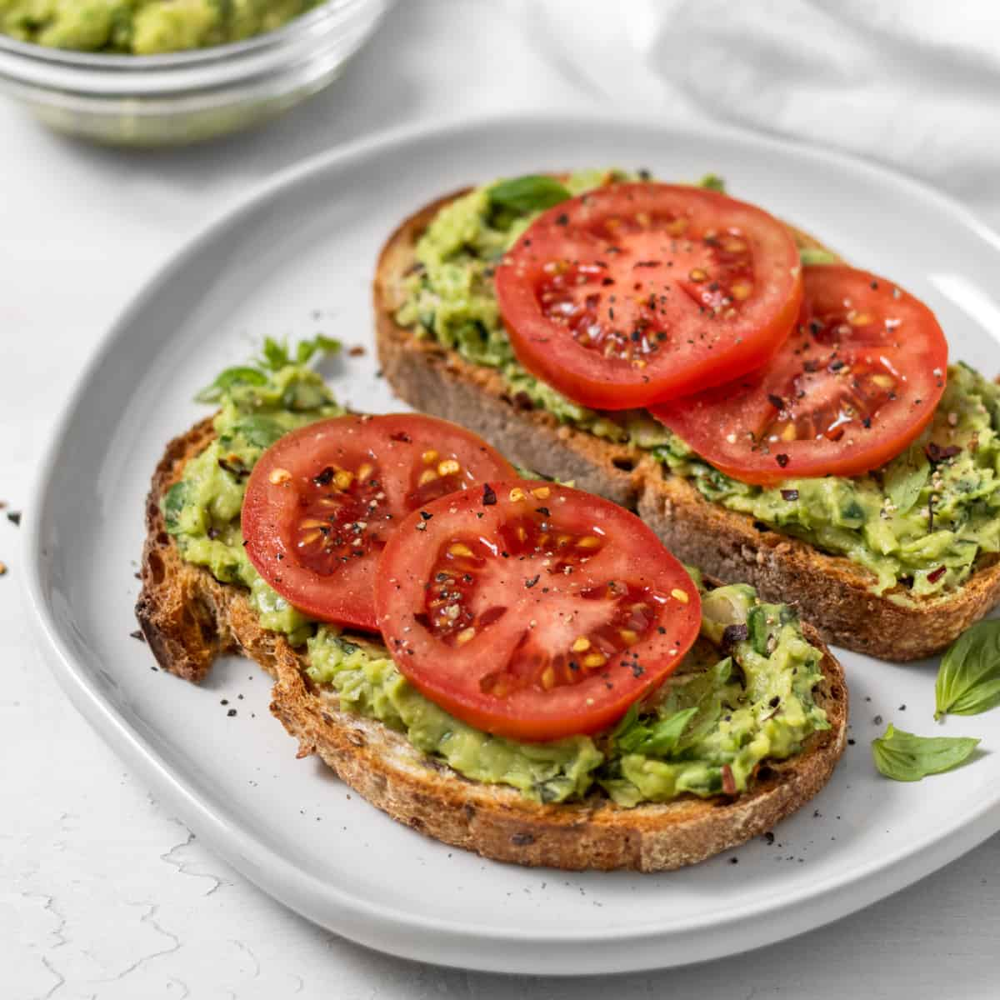

Recipes
Vegetable Stir-Fry
A vegetable stir-fry is a quick and versatile dish.
Cooking process:
Heat some oil in a pan, add your favorite vegetables (such as bell peppers, broccoli, carrots, and snap peas), stir-fry with garlic and ginger, and add a sauce made from soy sauce, sesame oil, and a touch of honey or sugar. Serve it over cooked rice or noodles for a satisfying meal.

Caprese Salad
This classic Italian salad is incredibly easy to make.
Cooking process:
Layer slices of fresh tomatoes, mozzarella cheese, and basil leaves on a plate. Drizzle with extra virgin olive oil and balsamic vinegar, and sprinkle with salt and pepper for a simple and refreshing appetizer or side dish.

Pasta Primavera
Pasta Primavera is a vibrant and flavorful Italian dish featuring pasta tossed with a medley of fresh, sautéed spring vegetables.
Cooking process:
Boil your favorite pasta (penne or spaghetti work well) and toss it with a medley of lightly steamed or sautéed vegetables like zucchini, cherry tomatoes, and bell peppers. Finish with a drizzle of olive oil, grated Parmesan cheese, and fresh herbs like basil or parsley.

Chickpea Curry
A chickpea curry is both nutritious and quick to prepare.
Cooking process:
Sauté diced onions, garlic, and ginger in a pan until fragrant, then add canned chickpeas, diced tomatoes, and a blend of curry spices. Simmer until the flavors meld, and serve over rice.

Avocado Toast
Avocado toast is a simple and nutritious dish consisting of mashed ripe avocado spread on toasted bread, often seasoned with salt and pepper and customized with various toppings.
Cooking process:
For a quick and healthy breakfast or snack, mash a ripe avocado and spread it on whole-grain toast. Top with a sprinkle of salt, pepper, and red pepper flakes for some heat. You can also add sliced tomatoes, a poached egg, or feta cheese for extra flavor.
